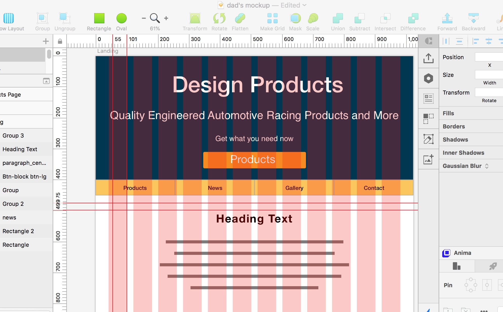
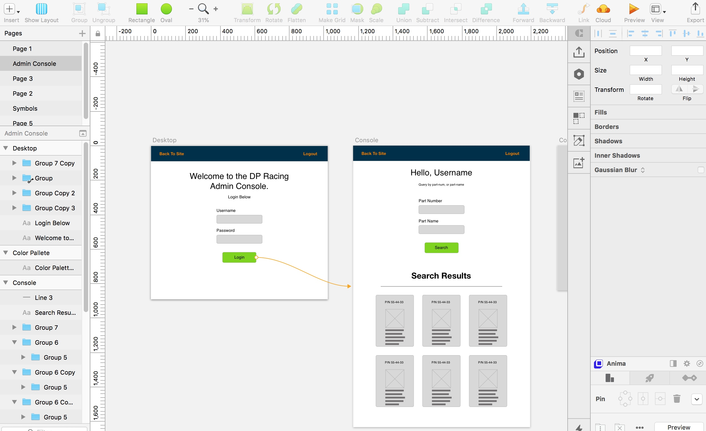

Case Study: DP Racing

Project Overview
DP Racing has been fabricating performance parts for vintage Datsun street-cars & racers since 1980. As the premier business in Southern California for niche auto parts, DP Racing sought a modernized look for their website, as well as an administrative console for managing product orders and inventory data.
My Roles
For this project, I filled the roles of UI/UX Designer as well as Front-end Developer. This allowed me to prepare and visualize the site based on user research prior to prototyping, and ultimately designing, developing and implementing the site.
Project Timeline
The timeline for this project was two weeks, which was a very small window for a project of this scale. This forced me to draw from my experiences in military planning in order to accomplish key tasks. Because of these tight time constraints, I used Bootstrap's Framework because of its ability to quickly assemble a B2B site template then customize to suit the customer's needs.
The Challenge
Identifying a client's specific problem is key to ensuring their design goals are met. Research findings from user interviews proved invaluable in defining clear issues with measurable goals, as well as a concise Challenge Statement.
"How might we provide a visually re-designed webpage while introducing an updated UI, new products page features, and admin capabilities for the users and owner of dpracing.com that facilitates a streamlined browsing experience while also providing the business with the ability to manage product inventory from the website?"
The Users
Great design requires knowing your target user and viewing a project from their perspective. Results of user research and interviews led to the birth of the project's primary persona, "Mario".
Persona Bio
Mario is a Datsun street car enthusiast who owns a fabrication shop of his own. He works on own car collection and he has a loyal customer following. In order to save time when working on a project, he often orders custom components from an outside vendor. The issue he finds when ordering such unique parts is the difficulty in ordering parts online. A majority of vendors in the market have no web presence, and those who do are extremely outdated and difficult to navigate.
Research
To discover more about the site’s typical users I conducted user and competitor research. I interviewed 10 members of the racing industry including consumers and businesses and was given plenty of actionable feedback to proceed with the design of the site.
The design of the admin console and its required capabilities were discussed with the sole user of the site's product management feature, the site owner. The admin wanted the design of the UI to be as simple as possible allowing him to manage his inventory in a distraction-free space.
In order to give my users the best experience possible, I defined key goals which could be achieved in such a short time-frame. This particular project was interesting to design for because required me to design from multiple users perspectives, the customer as well as the owner of DP Racing as a user of the admin console. This is a custom site for the shop so I was able to design the admin console to meet that user’s specific needs. If this was a larger business or a generic auto parts site, I would have had to interview more owners and analyze the findings to design the best solution to suit all (or most!) of the users.
Q:What is one thing you would improve about the websites you purchase custom auto parts from?
A:I wish the quality of a vendor's site matched the superb quality of their service and parts.
Though I gained many insights from my user research I chose to focus on two primary pain-points for the consumer users of the site as well as two for the admin user:
- Modernize the site's UI.
- Improve the site layout to increase readability of the site's content.
- Create a minimal interface drawing focus to the functionality of the admin console.
- Display key product data as editable cards.
In order to generate ideas I put pen to paper and sketched out lightweight screens for the client to review. Once a rough layout was approved I created several mock-ups using Adobe Comp CC for low fidelity and Sketch for mid-fidelity prototype versions.
Constraints
As you can imagine, fabricating custom auto parts for 38 years generates a robust database. My two-week window left me with little time to assemble a data structure using my client's handwritten index of part numbers! Luckily there was an excel spreadsheet listing all part numbers for three primary component categories: Suspension, Drivetrain, and Brakes. The next problem that arose was getting data from the spreadsheet to a valid JSON data structure.
Thanks to Google I managed to find the perfect web-based tool for my current challenge. Mockaroo.com, allows you to upload data in various document formats and convert it to a format of your choice. In my case .csv to .json worked, and with a few minor edits, I had a valid JSON database file to upload to Firebase.
Prototypes
Using Sketch I began creating a mid-fidelity prototype of the website focusing on the customer-facing area of the site.
A separate prototype was created for the admin page for its sole user.
Usability Testing
As the wireframes began to scale into prototypes, I continued to gather insights into how I might improve the site's design and user experience. For example, I knew the brand colors of DP Racing were bright and may cause accessibility issues. Trying to implement them successfully at first was a challenge.
After the first round of user testing, I got great feedback about some icons being difficult to find because they were the same color as the text. My solution was to color the icon's different shades of the brand colors to differentiate icons from the text. I applied the same process to section headings to help distinguish visual hierarchy which helped users navigate the page during the next iteration of user tests.
Code & Data
Prior to writing a single line of code, I conducted some pre-dev planning to ensure the process went as smoothly as possible. I prepared a flat data structure to hold the product inventory. I prepared an agile board and its issues to track progress throughout the project.
I chose to develop user authentication as well as the website's database using Google's Firebase. Integration with Firebase was quick and easy enough, which really helped me save time to develop the site's other features.
Grunt was my task runner of choice due to its extensive package library, thorough documentation, and a CLI that I am partial to. A few of the tasks running in the background were sass, browserify, and JSHint.

Using Sass allowed me to quickly style many elements across multiple pages, define default styles for specific elements, and keep styles manageable by components using partials and imports.

jQuery's expanded javascript library allowed me to quickly write the site's logic in DRY, modular code which was compiled later using grunt and browserify. Here is an example of one such block using jQuery's ajax call to request and parse data within the admin console.
Lessons Learned
When the project was completed I was not short on fresh knowledge. From integrating with Firebase to user interviews, this project came chock full of lessons. While there are many, I'll focus on my top three:
- Look deeper into the responses from user interviews for insights.
- Taking an extra moment to think about what else a particular answer might have in store proved to be worthwhile during this project. For example:
-
Q: "What is the most difficult part of navigating a web page for you?"
A: "When people decide to put Dark blue letters on a black background" - When designing and prototyping, use component libraries to expedite the process.
- I am a huge fan of designing my own components, and take pride in the ones I do create. That being said, I had to keep MVP in mind and instead chose to use a Sketch bootstrap library. The strict time-line of the project also influenced this decision, and paid off!
- Sass is awesome!
- CSS compiler's are a dime a dozen. However, I feel that Sass integrates wonderfully with my personal workflow. Mixin's, imports, and functions are just a few of the reasons I choose Sass!
Closing
Even though the two-week deadline was stressful, this project turned out to be a great experience for me. I learned crucial lessons every step of the way. From AJAX calls with jQuery, task running with Grunt, or conducting user research to develop a persona, my knowledge grew immensely during this project.